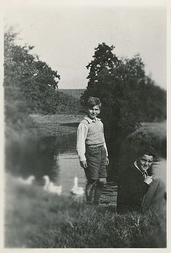
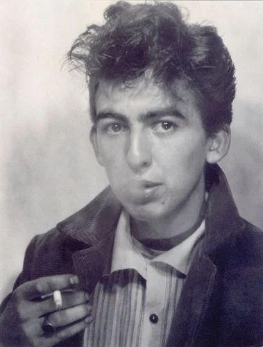
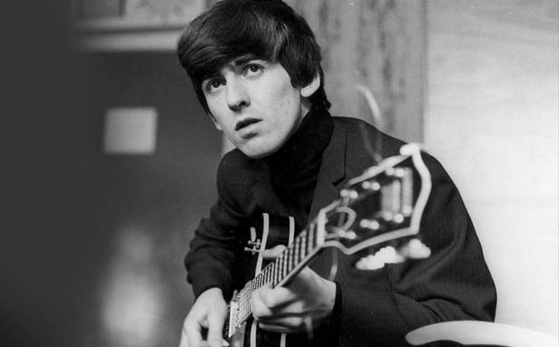
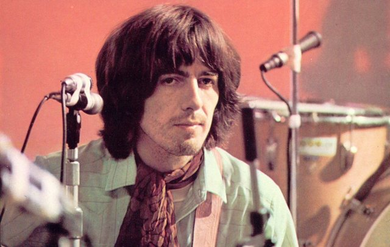

George Harrison

Sometimes called "the quiet Beatle", Harrison embraced Indian culture and helped broaden the scope of popular music through his incorporation of Indian instrumentation and Hindu-aligned spirituality in the Beatles' work.[2] Although the majority of the band's songs were written by John Lennon and Paul McCartney, most Beatles albums from 1965 onwards contained at least two Harrison compositions. His songs for the group include "Taxman", "Within You Without You", "While My Guitar Gently Weeps", "Here Comes the Sun" and "Something". Harrison's earliest musical influences included George Formby and Django Reinhardt; subsequent influences were Carl Perkins, Chet Atkins and Chuck Berry.
By 1965, he had begun to lead the Beatles into folk rock through his interest in Bob Dylan and the Byrds, and towards Indian classical music through his use of Indian instruments, such as the sitar, which he had become acquainted with on the set of the film Help![3] He played sitar on numerous Beatles songs, starting with "Norwegian Wood (This Bird Has Flown)". Having initiated the band's embracing of Transcendental Meditation in 1967, he subsequently developed an association with the Hare Krishna movement. After the band's break-up in 1970, Harrison released the triple album All Things Must Pass, a critically acclaimed work that produced his most successful hit single, "My Sweet Lord", and introduced his signature sound as a solo artist, the slide guitar. He also organised the 1971 Concert for Bangladesh with Indian musician Ravi Shankar, a precursor to later benefit concerts such as Live Aid. In his role as a music and film producer, Harrison produced acts signed to the Beatles' Apple record label before founding Dark Horse Records in 1974; he co-founded HandMade Films in 1978, initially to produce the Monty Python troupe's comedy film The Life of Brian (1979).
Harrison released several best-selling singles and albums as a solo performer. In 1988, he co-founded the platinum-selling supergroup the Traveling Wilburys. A prolific recording artist, he was featured as a guest guitarist on tracks by Badfinger, Ronnie Wood and Billy Preston, and collaborated on songs and music with Dylan, Eric Clapton, Ringo Starr and Tom Petty, among others. Rolling Stone magazine ranked him number 11 in their list of the "100 Greatest Guitarists of All Time". He is a two-time Rock and Roll Hall of Fame inductee – as a member of the Beatles in 1988, and posthumously for his solo career in 2004.
Harrison's first marriage, to model Pattie Boyd in 1966, ended in divorce in 1977. In the following year he married Olivia Arias, with whom he had a son, Dhani. Harrison died from lung cancer in 2001 at the age of 58, two years after surviving a knife attack by an intruder at his home, Friar Park. His remains were cremated, and the ashes were scattered according to Hindu tradition in a private ceremony in the Ganges and Yamuna rivers in India. He left an estate of almost £100 million.
Early life
Harrison was born at 12 Arnold Grove in Wavertree, Liverpool, on 25 February 1943.[5][nb 2] He was the youngest of four children of Harold Hargreaves (or Hargrove) Harrison (1909–1978) and Louise (née French;[10] 1911–1970). Harold was a bus conductor who had worked as a ship's steward on the White Star Line,[11] and Louise was a shop assistant of Irish Catholic descent.[6] He had one sister, Louise (16 August 1931 – 29 January 2023), and two brothers, Harold (born 1934) and Peter (20 July 1940 – 1 June 2007).
According to Boyd, Harrison's mother was particularly supportive: "All she wanted for her children is that they should be happy, and she recognised that nothing made George quite as happy as making music."[14] Louise was an enthusiastic music fan, and she was known among friends for her loud singing voice, which at times startled visitors by rattling the Harrisons' windows.[15] When Louise was pregnant with George, she often listened to the weekly broadcast Radio India. Harrison's biographer Joshua Greene wrote, "Every Sunday she tuned in to mystical sounds evoked by sitars and tablas, hoping that the exotic music would bring peace and calm to the baby in the womb.
For the first four years of his life, Harrison lived at 12 Arnold Grove, a terraced house on a cul-de-sac.[17] The home had an outdoor toilet and its only heat came from a single coal fire. In 1949, the family was offered a council house and moved to 25 Upton Green, Speke.[18] In 1948, at the age of five, Harrison enrolled at Dovedale Primary School.[19] He passed the eleven-plus exam and attended Liverpool Institute High School for Boys from 1954 to 1959.[20][21] Though the institute did offer a music course, Harrison was disappointed with the absence of guitars, and felt the school "moulded [students] into being frightened".
MHarrison's earliest musical influences included George Formby, Cab Calloway, Django Reinhardt and Hoagy Carmichael;[23] by the 1950s, Carl Perkins and Lonnie Donegan were significant influences.[24] In early 1956, he had an epiphany: while riding his bicycle, he heard Elvis Presley's "Heartbreak Hotel" playing from a nearby house, and the song piqued his interest in rock and roll.[25] He often sat at the back of the class drawing guitars in his schoolbooks, and later commented, "I was totally into guitars."[26] Harrison cited Slim Whitman as another early influence: "The first person I ever saw playing a guitar was Slim Whitman, either a photo of him in a magazine or live on television. Guitars were definitely coming in.
At first, Harold Harrison was apprehensive about his son's interest in pursuing a music career. However, in 1956, he bought George a Dutch Egmond flat-top acoustic guitar, which according to Harold, cost £3.10s.– (equivalent to £90 in 2023[28]).[29][30] One of his father's friends taught Harrison how to play "Whispering", "Sweet Sue" and "Dinah". Inspired by Donegan's music, Harrison formed a skiffle group, the Rebels, with his brother Peter and a friend, Arthur Kelly.[31] On the bus to school, Harrison met Paul McCartney, who also attended the Liverpool Institute, and the pair bonded over their shared love of music.
1957–1960: The Quarrymen
After McCartney's poor performance on lead guitar at the Conservative Club, the group needed another guitarist to accommodate their new rock-focused repertoire; McCartney recommended his school friend George Harrison.[44] Harrison first saw the group perform on 6 February 1958 at Wilson Hall, where McCartney introduced him to Lennon.[45][44] Harrison subsequently auditioned for The Quarrymen in March at Rory Storm's Morgue Skiffle Club, playing "Guitar Boogie Shuffle".[46][47] Lennon thought Harrison (having just turned 15) was too young to join the band, so McCartney engineered another meeting on the upper deck of a Liverpool bus, where Harrison played "Raunchy" for Lennon.[48][49] After McCartney's constant advocacy, Lennon allowed Harrison to join the Quarrymen as lead guitarist.[50][48][51] Harrison's entry into the Quarrymen shifted the group even more away from skiffle, in addition to ending Lennon's use of banjo chords.[52] Around this time, John Duff Lowe, another school friend of McCartney, joined the group on piano.
With Harrison's entry, the Quarrymen now had four guitarists. Lennon and McCartney suggested to Griffiths that he instead buy a bass guitar, but Griffiths refused because of the expense.[54] The two subsequently convinced Nigel Walley, still acting as the group's manager, to fire Griffiths.[55] Walley regretted the incident, and as a result gradually severed his ties with the Quarrymen.[56] Around this same time, Len Garry contracted tubercular meningitis, and spent seven months in the hospital, never playing with the group again.[57] This left Colin Hanton as the last of the group of Lennon's Quarry Bank classmates that originally comprised the group. In March, McCartney bought an Elpico amplifier with two inputs, and he and Harrison added pickups to their guitars, giving the Quarrymen an electric sound for the first time.
VPercy Phillips operated a studio called Phillips' Sound Recording Services at 38 Kensington, Liverpool, between the kitchen and a front room that served as an electrical goods shop.[59] Actors from the Liverpool Playhouse often stayed in the room above the studio, and were asked by Phillips to record monologues and poems. Phillips had just turned 60 years old when Harrison heard about the studio from guitarist Johnny Byrne of the Raving Texans, who had recorded a version of "Butterfly" there on 22 June 1957.[59] The Quarrymen booked a recording session on 12 July 1958.[60] They recorded straight to disc, as tape would have been an extra expense. The sound was recorded live by a single microphone in the centre of the room, and Lennon suggested that Hanton put a scarf over the snare drum to lower the volume.[61] They first recorded a McCartney original (credited as McCartney/Harrison) followed by Buddy Holly's "That'll Be the Day". Both feature Lennon on lead vocals.[62] When the recording was finished, Phillips handed the group a fragile 78rpm record, which was passed around the band for one week each, or lent out to friends. It was later lost until Lowe rediscovered it in 1981, and sold it to McCartney for an undisclosed amount.[61] The recordings would later be issued on the Beatles' rarities album Anthology 1.
As they were walking home after the evening performance, Lennon and Shotton discussed the afternoon encounter with McCartney, and Lennon said that perhaps they should invite McCartney to join the band. Two weeks later, Shotton encountered McCartney cycling through Woolton, and conveyed Lennon's casual invitation for him to join the Quarrymen, and Vaughan also invited McCartney to join.[26] McCartney said he would join after Scout camp in Hathersage, Derbyshire, and a holiday with his family at the Butlin's holiday camp in Filey, North Yorkshire.[34][35] Shotton and Davis both left the Quarrymen in August, feeling that the group was moving away from skiffle and towards rock, leaving their instruments superfluous.[36][35] When McCartney returned from holiday, he began rehearsing with the Quarrymen, playing songs such as "Bye Bye Love" (The Everly Brothers) and "All Shook Up", which Lennon and the group had been trying to learn, without success.
McCartney made his debut with the band on 18 October 1957 at a Conservative Club social held at the New Clubmoor Hall in the Norris Green section of Liverpool.[38][34] Lennon and McCartney wore cream-coloured sports jackets, which were paid for by the whole group—Walley collected half a crown per week from each member until they were paid for — and the others wore white shirts with tassels and black bootlace ties.[38] To the irritation of the other group members, McCartney endlessly practised the lead guitar intro to "Raunchy". The Quarrymen continued to play sparse gigs throughout the autumn of 1957, mostly for local promoter Charlie McBain.[39] During this period, the group almost entirely excised skiffle from their repertoire, focusing on covers of songs by rock and roll singers such as Elvis Presley, Carl Perkins, Little Richard, and Larry Williams, and the Quarrymen's sound increasingly relied on harmony singing between Lennon and McCartney.[40] An extremely important influence for them at the time was Buddy Holly and his group the Crickets.[41] Around this time, Lennon and McCartney both started writing songs influenced by Holly – Lennon's "Hello Little Girl" and McCartney's "I Lost My Little Girl" – and both were impressed with each other's efforts.[42] The two young men began writing together.
1960–1970: The Beatles
In 1960, promoter Allan Williams arranged for the band, now calling themselves the Beatles, to play at the Indra and Kaiserkeller clubs in Hamburg, both owned by Bruno Koschmider.[39] Their first residency in Hamburg ended prematurely when Harrison was deported for being too young to work in nightclubs.[40] When Brian Epstein became their manager in December 1961, he polished up their image and later secured them a recording contract with EMI.[41] The group's first single, "Love Me Do", peaked at number 17 on the Record Retailer chart, and by the time their debut album, Please Please Me, was released in early 1963, Beatlemania had arrived.[42] Often serious and focused while on stage with the band, Harrison was known as "the quiet Beatle".[43][44] That moniker arose when the Beatles arrived in the United States in early 1964, and Harrison was ill with a case of Strep throat and a fever and was medically advised to limit speaking as much as possible until he performed on The Ed Sullivan Show as scheduled. As such, the press noticed Harrison's apparent laconic nature in public appearances on that tour and the subsequent nickname stuck, much to Harrison's amusement.[45] He had two lead vocal credits on the LP, including the Lennon–McCartney song "Do You Want to Know a Secret?", and three on their second album, With the Beatles (1963).[46] The latter included "Don't Bother Me", Harrison's first solo writing credit.
Harrison served as the Beatles' scout for new American releases, being especially knowledgeable about soul music.[48] By 1965's Rubber Soul, he had begun to lead the other Beatles into folk rock through his interest in the Byrds and Bob Dylan, and towards Indian classical music through his use of the sitar on "Norwegian Wood (This Bird Has Flown)".[49][nb 3] He later called Rubber Soul his "favourite [Beatles] album".[51] Revolver (1966) included three of his compositions: "Taxman", selected as the album's opening track, "Love You To" and "I Want to Tell You".[52] His drone-like tambura part on Lennon's "Tomorrow Never Knows" exemplified the band's ongoing exploration of non-Western instruments,[53] while the sitar- and tabla-based "Love You To" represented the Beatles' first genuine foray into Indian music.[54] According to the ethnomusicologist David Reck, the latter song set a precedent in popular music as an example of Asian culture being represented by Westerners respectfully and without parody.[55] Author Nicholas Schaffner wrote in 1978 that following Harrison's increased association with the sitar after "Norwegian Wood", he became known as "the maharaja of raga-rock".[56] Harrison continued to develop his interest in non-Western instrumentation, playing swarmandal on "Strawberry Fields Forever".
By late 1966, Harrison's interests had moved away from the Beatles. This was reflected in his choice of Eastern gurus and religious leaders for inclusion on the album cover for Sgt. Pepper's Lonely Hearts Club Band in 1967.[58][nb 4] His sole composition on the album was the Indian-inspired "Within You Without You", to which no other Beatle contributed.[60] He played sitar and tambura on the track, backed by musicians from the London Asian Music Circle on dilruba, swarmandal and tabla.[61][nb 5] He later commented on the Sgt. Pepper album: "It was a millstone and a milestone in the music industry ... There's about half the songs I like and the other half I can't stand.
In January 1968, he recorded the basic track for his song "The Inner Light" at EMI's studio in Bombay, using a group of local musicians playing traditional Indian instruments.[64] Released as the B-side to McCartney's "Lady Madonna", it was the first Harrison composition to appear on a Beatles single.[64] Derived from a quotation from the Tao Te Ching, the song's lyric reflected Harrison's deepening interest in Hinduism and meditation.[65] During the recording of The Beatles that same year, tensions within the group ran high, and drummer Ringo Starr quit briefly.[66] Harrison's four songwriting contributions to the double album included "While My Guitar Gently Weeps", which featured Eric Clapton on lead guitar, and the horn-driven "Savoy Truffle".
Dylan and the Band were a major musical influence on Harrison at the end of his career with the Beatles.[68] While on a visit to Woodstock in late 1968, he established a friendship with Dylan and found himself drawn to the Band's sense of communal music-making and to the creative equality among the band members, which contrasted with Lennon and McCartney's domination of the Beatles' songwriting and creative direction. This coincided with a prolific period in his songwriting and a growing desire to assert his independence from the Beatles.[69] Tensions among the group surfaced again in January 1969, at Twickenham Studios, during the filmed rehearsals that became the 1970 documentary Let It Be.[69] Frustrated by the cold and sterile film studio, by Lennon's creative disengagement from the Beatles, and by what he perceived as a domineering attitude from McCartney, Harrison quit the group on 10 January. He returned 12 days later, after his bandmates had agreed to move the film project to their own Apple Studio and to abandon McCartney's plan for making a return to public performance.
Relations among the Beatles were more cordial, though still strained, when the band recorded their 1969 album Abbey Road.[71] The LP included what Lavezzoli describes as "two classic contributions" from Harrison – "Here Comes the Sun" and "Something" – that saw him "finally achieve equal songwriting status" with Lennon and McCartney.[72] During the album's recording, Harrison asserted more creative control than before, rejecting suggestions for changes to his music, particularly from McCartney.[73] "Something" became his first A-side when issued on a double A-side single with "Come Together"; the song was number one in Canada, Australia, New Zealand and West Germany,[74] and the combined sides topped the Billboard Hot 100 chart in the United States.[75] In the 1970s Frank Sinatra recorded "Something" twice (1970 and 1979) and later dubbed it "the greatest love song of the past fifty years".[76] Lennon considered it the best song on Abbey Road, and it became the Beatles' second most covered song after "Yesterday".
In May 1970, Harrison's song "For You Blue" was coupled on a US single with McCartney's "The Long and Winding Road" and became Harrison's second chart-topper when the sides were listed together at number one on the Hot 100.[79] His increased productivity meant that by the time of their break-up he had amassed a stockpile of unreleased compositions.[80] While Harrison grew as a songwriter, his compositional presence on Beatles albums remained limited to two or three songs, increasing his frustration, and significantly contributing to the band's break-up.[81] Harrison's last recording session with the Beatles was on 4 January 1970, when he, McCartney and Starr recorded his song "I Me Mine" for the Let It Be soundtrack album.
Early solo work: 1968–1969
Before the Beatles' break-up, Harrison had already recorded and released two solo albums: Wonderwall Music and Electronic Sound, both of which contain mainly instrumental compositions. Wonderwall Music, a soundtrack to the 1968 film Wonderwall, blends Indian and Western instrumentation, while Electronic Sound is an experimental album that prominently features a Moog synthesizer.[83] Released in November 1968, Wonderwall Music was the first solo album by a Beatle and the first LP released by Apple Records.[84] Indian musicians Aashish Khan and Shivkumar Sharma performed on the album, which contains the experimental sound collage "Dream Scene", recorded several months before Lennon's "Revolution 9".
In December 1969, Harrison participated in a brief tour of Europe with the American group Delaney & Bonnie and Friends.[86] During the tour, which included Clapton, Bobby Whitlock, drummer Jim Gordon and band leaders Delaney and Bonnie Bramlett, Harrison began to play slide guitar, and also began to write "My Sweet Lord", which became his first single as a solo artist.